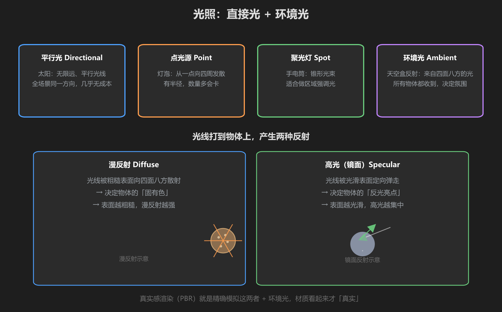
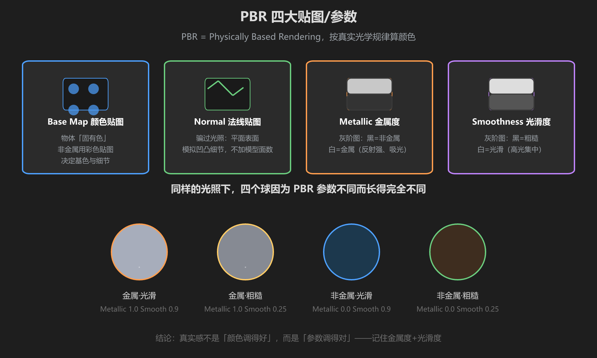
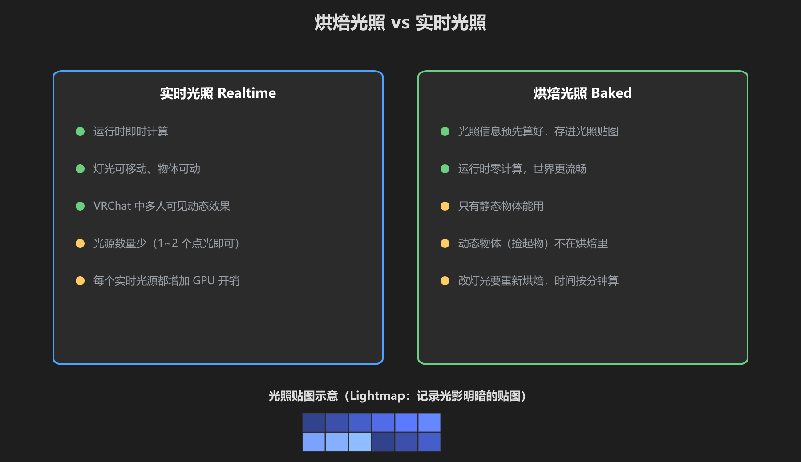

第 2 篇：光照与 PBR — 光的类型、反射与烘焙
没有光，画面就是黑的。这一篇解决两件事：光从哪里来，以及光打在物体上会发生什么。
1. 光的类型
Unity 的光源就四种，VRChat 世界开发九成时间只用前两种：

图：四种光源 + 漫反射/高光两种反射方式
| 光源 | 像什么 | VRChat 使用建议 |
|---|---|---|
| Directional（平行光） | 太阳 | 每个世界必备，默认照亮一切，几乎不耗性能 |
| Point（点光源） | 灯泡 | 局部补光、火把、水晶发光处；数量要克制 |
| Spot（聚光灯） | 手电筒 | 舞台灯光、强调某区域 |
| 环境光/天空盒 | 从四面八方来的光 | 决定整个世界的明暗基调（很重要！） |
漫反射 vs 高光
- 漫反射（Diffuse）：光被粗糙表面散射到四面八方。决定物体「固有色」——木头、布、墙靠它
- 高光（Specular）：光被光滑表面定向反射。决定「反光亮点」——金属、塑料、水面靠它
调材质时记住：越粗糙 = 漫反射越多、高光越弱；越光滑 = 高光越强越集中。
2. PBR — 材质真实感的秘密
PBR（Physically Based Rendering，基于物理的渲染）是现代引擎的默认渲染方式。它不让你「调一个颜色」，而是让你描述「物体是什么材质」：

图：同样的光照下，金属度 + 光滑度不同，四个球长得完全不一样
| 参数 | 控制什么 | 典型值 |
|---|---|---|
| Base Map（颜色） | 物体固有色 + 细节 | 墙：米白；水晶：淡蓝 |
| Normal（法线） | 假装表面有凹凸 | 石头墙面必用 |
| Metallic（金属度） | 0 = 非金属，1 = 金属 | 金属 1，塑料/石头 0 |
| Smoothness（光滑度） | 0 = 粗糙，1 = 光滑 | 金属 0.8~0.9，布 0~0.1 |
| Emission（自发光） | 自身发光，不受光照影响 | 屏幕、灯箱、水晶 |
新手最常见的坑：把 Smoothness 全都拉满 → 整个世界变成油光发亮的塑料。记住：粗糙才是默认，光滑是例外。
3. 烘焙光照 vs 实时光照
光照可以「每帧实时算」，也可以「提前算好存起来」。这是 VRChat 世界性能的核心分水岭。

图：烘焙 = 预先算好光影存进光照贴图；实时 = 每帧现算
| 实时光照 | 烘焙光照 | |
|---|---|---|
| 原理 | 每帧对每个光源实时计算 | 提前算好，存进光照贴图 |
| 优点 | 光源可动、物体可动 | 运行时零开销、效果细腻 |
| 缺点 | 光源数量多就卡 | 只有静态物体能用；改完要重新烘焙 |
| VRChat 实践 | 太阳 + 1~2 个点光源 | 大型世界的场景光影 |
VRChat 推荐组合：场景静态部分用烘焙光照（细腻又免费），动态东西（可拾取物、玩家附近）靠实时光。
动手试一试
- 场景里创建一个 Plane 和一个 Sphere
- 创建材质（URP/Lit），把 Metallic 拉到 1、Smoothness 拉到 0.9 → 球变成金属球
- 把 Metallic 拉回 0、Smoothness 拉到 0.2 → 变成哑光球
- 加一个 Directional Light，旋转它，观察阴影和明暗变化
- 把 Directional Light 的 Intensity 从 1 调到 3 → 画面会过曝发白
学前检查清单
- 认识四种光源，知道 Directional 是太阳
- 理解漫反射 vs 高光，以及它们和粗糙/光滑的关系
- 理解 PBR 的 Metallic 和 Smoothness 会怎么改变外观
- 理解烘焙 vs 实时的区别和各自的用途